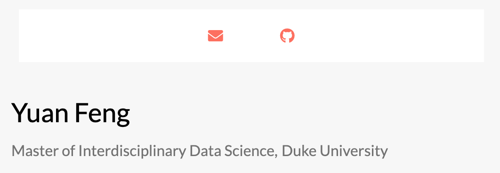

A portfolio website is a great choice for you to showcase you work and let recruiters know more about you. With Github Page, we could easily set up a personal website for free. And using Hugo, you can have access for hundreds of special themes to choose from.
For me, I’m using Mac OS system and plan to build up this website from command line. Below is a detailed tutorial of how I successfully set up my website from scratch - Stay Tuned!
- Install Hugo and Git
First open the terminal, and input the following command-line. Note that if you do not have homebrew installed, you may need to install it first.
brew install hugo
I recommned installing Git as well. run git --version in your command-line for checking.
- Build on local machine
Make sure to sit inside the directory to save the webiste. And run the following to initialize a new site:
cd /Users/yuanfeng/Desktop
hugo new site site_name
Then, we should have a new folder with the name we just made. It will come with a list of folders, and we will dig deeper into those folders in a minute.
- Select a theme
I personally enjoy designs of minimalist and the use white or black as its main colors. It only takes googling to find ready-to-go themes but it took me a while to find my favorite. Its github repo could be found here.
Then I run the following command line in the terminal to download the contents in themes folder:
cd site_name
cd themes
git clone https://github.com/themefisher/academia-hugo
And it’s also necessary to make sure the configurations are correct. Here I made some changes in the config.toml.
baseurl = "https://[your github username].github.io/"
languageCode = "en-us"
title = "the website title shown on the tab"
theme = "the same as theme name (exactly the folder name) in your themes folder"
- Test locally
I wanted to see how the webpage currently looks like by running the following:
cd site_name
hugo server
The following indictcated success in running it locally. By going to http://localhost:1313/ in my web browser, I could see my work so far and observe changes real-time.
Built in 4 ms
Watching for changes in /Users/yuanfeng/site/yuan/{archetypes,content,data,layouts,static}
Watching for config changes in /Users/yuanfeng/site/yuan/config.toml
Environment: "development"
Serving pages from memory
Running in Fast Render Mode. For full rebuilds on change: hugo server --disableFastRender
Web Server is available at http://localhost:1313/ (bind address 127.0.0.1)
Press Ctrl+C to stop
- Personalize my website
The template comes with a variety of different sections such as Publicatiosn, Recent Posts and Contact. However, in order for the main page to stay concise and minial, I removed the less appealing and related components and replaced the sample photos and texts with mine by editing html and md files.
Another main change compared with the original template is the header and dropdown. This turned out to be tricky as I needed to tweak the Javascript code as well. The final results seem great!

- Deploy to Git Pages
Last step is to render my website to Github Pages. I started by running the following commnad, which will generate a folder called public and it will contain the required web files.
cd site_name
hugo
- Create Github Repository
I wanted to publish my site as my github name. In order to do that, I created a new branch named <USERNAME>.github.io. and set it to public.
Then the following command could sync the website to my github.
cd public
git init
git add .
git remote add origin https://github.com/username/username.github.io.git
git commit -m “first commit”
git push origin master
After completing the commiting, I went to my repository and clicked on settings, then scrolled to the section of Github Pages. It successfully returned the link of my personal website:
https://yuan-feng1.github.io/
And my personal website was successfully published.
That’s all for this blog. Thanks for reading!
Let me know if you have any comments/question. Feel free to find me at yuan.feng347@duke.edu